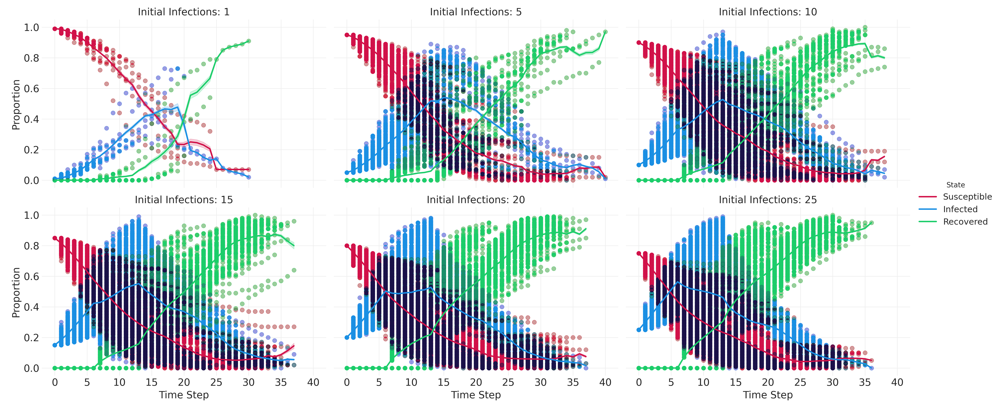
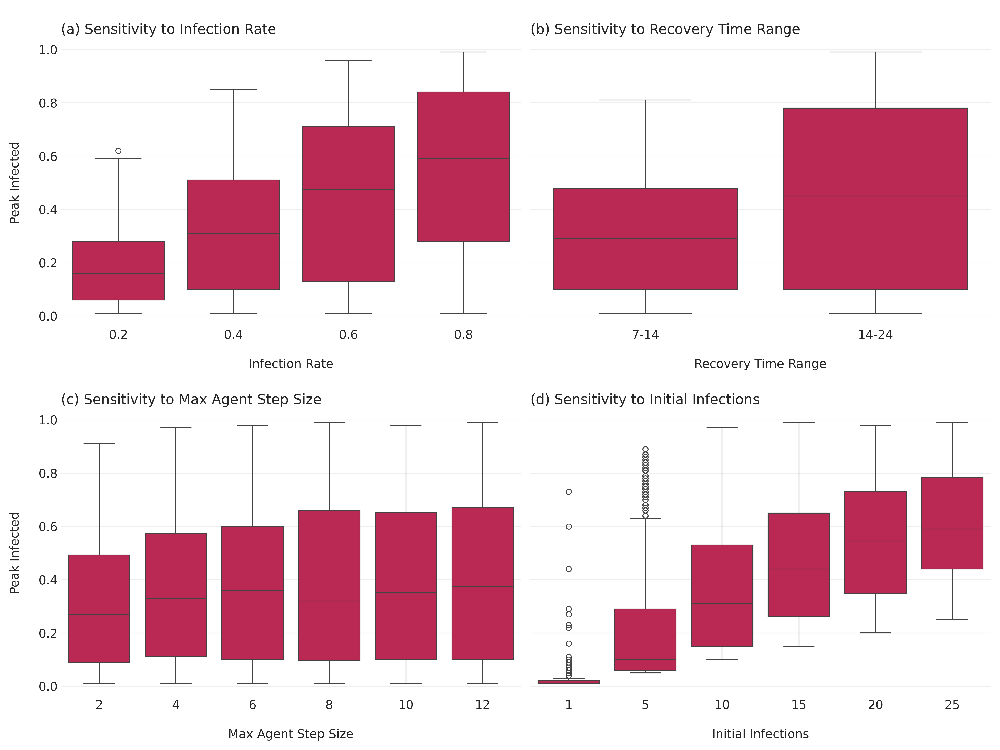

Simulation and Agent-based Modelling
Simulation and Agent-based Modelling
This notebook accompanies the recorded lecture on “Simulation and Agent-based Modelling.” It’s intended to provide you with a hands-on experience in building and analyzing agent-based models using Python.
Learning Objectives
By the end of this workshop, you will be able to:
- Understand the basic concepts and components of agent-based modeling.
- Implement a simple SIR model using Mesa, a Python library for agent-based modeling.
- In this notebook, this is done via the course package
icsspy, but the models we load here are the same ones I developed in the lecture.
- In this notebook, this is done via the course package
- Analyze the behavior of the SIR model under different conditions and parameters.
- Explore a Bounded Confidence Model to understand opinion dynamics.
- Conduct sensitivity analysis and parameter sweeps to systematically investigate model behavior.
Setup
Let’s start by importing the necessary packages and configuring our environment.
import mesa
from mesa.batchrunner import batch_run
import matplotlib.pyplot as plt
import numpy as np
import pandas as pd
import random
import networkx as nx
import seaborn as sns
import matplotlib.pyplot as plt
import icsspy
icsspy.set_style()
from icsspy.networks import plot_line_comparisonLoad and Configure the Model(s)
We’ll begin by exploring a classic Susceptible-Infected-Recovered (SIR) model. This model is often used to simulate the spread of infectious diseases.
Model 1: SIR Model with High Transmissibility
First, let’s load the SIRModel class from the course package and define the parameters for our first model, which simulates a disease with a high infection rate.
from icsspy.abms.sir import SIRModel
model_1_params = {'N': 100,
'grid_height': 40,
'grid_width': 40,
'infection_rate': 0.3,
'max_agent_step_size': 1,
'n_initial_infections': 2,
'n_iterations': 150,
'recovery_time_range': [14, 24]
}
print("Model 1 Params\n", model_1_params)Here, we have a population of 100 agents on a 40x40 grid. The infection rate is set to 0.3, meaning there’s a 30% chance that a susceptible agent will become infected when in contact with an infected agent. The agents can move to adjacent cells, and their recovery time is randomly chosen between 14 and 24 time steps.
Now, let’s run the model and store the results.
model_1 = SIRModel(
n_initial_infections = model_1_params['n_initial_infections'],
grid_width = model_1_params['grid_width'],
grid_height = model_1_params['grid_height'],
N = model_1_params['N'],
infection_rate = model_1_params['infection_rate'],
recovery_time_range = model_1_params['recovery_time_range'],
max_agent_step_size = model_1_params['max_agent_step_size'],
)
for i in range(model_1_params['n_iterations']):
model_1.step()
m1res = model_1.datacollector.get_model_vars_dataframe()
m1resModel 2: SIR Model with Low Transmissibility
model_2_params = {'N': 100,
'grid_height': 40,
'grid_width': 40,
'infection_rate': 0.15,
'max_agent_step_size': 1,
'n_initial_infections': 2,
'n_iterations': 150,
'recovery_time_range': [14, 24]
}
print("\nModel 2 Params\n", model_2_params)We have kept most of the parameters the same as in Model 1, except for the infection rate, which is now 0.15, to simulate a less contagious disease.
Now, let’s run Model 2.
model_2 = SIRModel(
n_initial_infections = model_2_params['n_initial_infections'],
grid_width = model_2_params['grid_width'],
grid_height = model_2_params['grid_height'],
N = model_2_params['N'],
infection_rate = model_2_params['infection_rate'],
recovery_time_range = model_2_params['recovery_time_range'],
max_agent_step_size = model_2_params['max_agent_step_size'],
)
for i in range(model_2_params['n_iterations']):
model_2.step()
m2res = model_2.datacollector.get_model_vars_dataframe()
m2resComparing the Two Models
Let’s compare the infection curves from both models to see how the different infection rates affect the spread of the disease.
fig, ax = plt.subplots()
ax.plot(m1res['Infected'], label=r'High transmissibility, $\beta$=0.3')
ax.plot(m2res['Infected'], label=r'Low transmissibility $\beta$=0.15')
plt.xlabel("\nDiscrete Steps in Time")
plt.ylabel("Proportion Infected\n")
plt.legend(loc='upper right', fontsize=10)
plt.savefig('output/sir_compare_models_1-2.png')Analyzing Agent Interactions
In addition to tracking the number of infected agents, it’s also useful to analyze how agents interact with each other during the simulation.
interaction_graphs = {}
interaction_graph_summaries = {}
models = [model_1, model_2]
for i, model in enumerate(models, start=1):
wel = []
for agent in model.schedule.agents:
for k, v in agent.interactions.items():
wel.append((int(agent.unique_id), k, v))
G = nx.Graph()
G.add_weighted_edges_from(wel)
interaction_graphs[f'M{i}'] = G
avg_degree = round(sum(dict(G.degree()).values()) / float(G.number_of_nodes()), 2)
interaction_graph_summaries[f'M{i}'] = (G.number_of_nodes(), G.number_of_edges(), avg_degree)interaction_graph_summaries = pd.DataFrame(interaction_graph_summaries).T
interaction_graph_summaries.columns = ['No. Nodes', 'No. Edges', 'Avg. Degree']
interaction_graph_summaries# Initialize an empty graph
G = interaction_graphs['M2']
weights = [d['weight'] for u, v, d in G.edges(data=True)]
plt.figure(figsize=(8, 6))
sns.ecdfplot(weights)
plt.xlabel('Interaction Weight')
plt.ylabel('ECDF')
plt.title('ECDF of Interaction Weights')
plt.grid(True)
plt.savefig('output/compare_agent_networks.png', dpi=300)Model Analysis
Model analysis is critical for understanding the behavior of an ABM and ensuring that it accurately reflects the real-world system being modeled. In this section, we’ll cover various analysis techniques, including descriptive, exploratory, comparative, and predictive analyses.
Sensitivity Analysis: Peak Proportion Infected Sensitivity analysis helps determine how changes in model parameters affect the outcomes. Here, we’ll focus on the peak proportion of infected agents as our outcome of interest.
First, let’s set up a parameter sweep for the sensitivity analysis.
params = {
"N": 100,
"grid_height": 40,
"grid_width": 40,
"infection_rate": [0.2, 0.4, 0.6, 0.8,],
"recovery_time_range": [(7,14), (14,24)],
"max_agent_step_size": [2, 4, 6, 8, 10, 12],
"n_initial_infections": [1, 5, 10, 15, 20, 25]
}Then we can run multiple mpdels for every combination of parameters using the batch_run() function.
results = mesa.batch_run(
model_cls=SIRModel,
parameters=params,
iterations=10,
max_steps=100,
number_processes=1,
data_collection_period=1, # collect data at every step
display_progress=True,
)
results_df = pd.DataFrame(results)
results_df.info()results_df.head()Let’s create a small multiples plot to compare some high-level patterns across different parameter settings.
melted_df = pd.melt(
results_df,
# include 'RunId' to differentiate runs
id_vars=['n_initial_infections', 'infection_rate', 'Step', 'RunId'],
value_vars=['Susceptible', 'Infected', 'Recovered'],
var_name='State',
value_name='Proportion'
)
# create the FacetGrid
g = sns.FacetGrid(
melted_df, col="n_initial_infections", hue="State",
col_wrap=3, height=4, aspect=1.5
)
# map the scatterplot for individual observations
g.map_dataframe(
sns.scatterplot, x='Step', y='Proportion', alpha=0.005, edgecolor=None
)
# map the lineplot for aggregated data
g.map_dataframe(
sns.lineplot, x='Step', y='Proportion', linewidth=2,
)
g.add_legend()
g.set_axis_labels("Time Step", "Proportion")
g.set_titles("Initial Infections: {col_name}")
plt.savefig("images/sir_subplots.png", dpi=300)
Next, we aggreate the results for the sensitivity analysis.
aggregated_results = results_df.groupby(["RunId", "infection_rate", "recovery_time_range", "max_agent_step_size", "n_initial_infections"]).agg(
peak_infected=("Infected", "max")
).reset_index()
aggregated_results.head()Let’s plot the sensitivity analysis results. We’ll need to convert the recovery_time_range tuples into strings first.
aggregated_results['recovery_time_range_str'] = aggregated_results['recovery_time_range'].apply(lambda x: f"{x[0]}-{x[1]}")And then we can set up the plot.
fig, axes = plt.subplots(2, 2, figsize=(16, 12), sharey=True)
# infection rate
sns.boxplot(ax=axes[0, 0], x="infection_rate", y="peak_infected", data=aggregated_results)
axes[0, 0].set_title("\n(a) Sensitivity to Infection Rate", loc="left")
axes[0, 0].set_xlabel("\nInfection Rate")
axes[0, 0].set_ylabel("Peak Infected\n")
# recovery time range (use the string version we just created)
sns.boxplot(ax=axes[0, 1], x="recovery_time_range_str", y="peak_infected", data=aggregated_results)
axes[0, 1].set_title("\n(b) Sensitivity to Recovery Time Range", loc="left")
axes[0, 1].set_xlabel("\nRecovery Time Range")
axes[0, 1].set_ylabel("Peak Infected\n")
# max agent step size
sns.boxplot(ax=axes[1, 0], x="max_agent_step_size", y="peak_infected", data=aggregated_results)
axes[1, 0].set_title("\n(c) Sensitivity to Max Agent Step Size", loc="left")
axes[1, 0].set_xlabel("\nMax Agent Step Size")
axes[1, 0].set_ylabel("Peak Infected\n")
# initial infections
sns.boxplot(ax=axes[1, 1], x="n_initial_infections", y="peak_infected", data=aggregated_results)
axes[1, 1].set_title("\n(d) Sensitivity to Initial Infections", loc="left")
axes[1, 1].set_xlabel("\nInitial Infections")
axes[1, 1].set_ylabel("Peak Infected\n")
plt.tight_layout()
plt.savefig("images/sir_sensitivity_analysis.png", dpi=300)
Correlate the Parameters with the Outcomes
As an additional step, we can correlate our parameters with the peak proportion infected to get a sense of the relative influence of each parameter. To do so, we have to transform the recovery time ranges into a single number. There are a few ways we could do this, but to keep things simple we’ll take the mean of the two values.
aggregated_results["recovery_time_range_numeric"] = aggregated_results["recovery_time_range"].apply(lambda x: sum(x) / len(x))Once we’ve done that, we’ll drop the original tuple (recovery_time_range) and it’s string representation (recovery_time_range_str). I’ll create a new dataframe for these modifications, since we’ll use the dropped variables in our second sensitivity analysis.
aggregated_results_4corr = aggregated_results.copy()
aggregated_results_4corr.drop(['recovery_time_range', 'recovery_time_range_str'], axis=1, inplace=True)And now we can correlate!
correlation_matrix = aggregated_results_4corr.corr()
peak_infected_correlations = correlation_matrix["peak_infected"].drop(
["peak_infected", "RunId"]
)Let’s visualize the correlations using a line comparison plot.
for_plotting = {}
for parameter, correlation in zip(peak_infected_correlations.index, peak_infected_correlations.values):
for_plotting[parameter] = round(correlation, 4)
plot_line_comparison(
for_plotting,
xrange=(0,1), # all positive correlations
print_decimals=True,
title="",
xlabel='\nCorrelations between model parameters and peak infection.',
filename="images/sir_correlations_params_peak_infection.png"
)
Sensitivity Analysis: Time to Peak Proportion Infected
Next, let’s analyze how different parameters affect the time it takes for the infection to reach its peak.
time_to_peak = results_df.loc[results_df.groupby("RunId")["Infected"].idxmax()]
time_to_peak = time_to_peak[["RunId", "Step", "Infected"]].rename(
columns={"Step": "time_to_peak", "Infected": "peak_infected"}
)
time_to_peak_merged = pd.merge(time_to_peak, aggregated_results, on="RunId")Let’s visualize how the time to peak infection varies with different parameters.
fig, axes = plt.subplots(2, 2, figsize=(16, 12), sharey=True)
# Infection rate
sns.boxplot(ax=axes[0, 0], x="infection_rate", y="time_to_peak", data=time_to_peak_merged)
axes[0, 0].set_title("\n(a) Time to Peak Infection vs. Infection Rate", loc="left")
axes[0, 0].set_xlabel("\nInfection Rate")
axes[0, 0].set_ylabel("Time to Peak Infection\n")
# Recovery time range
sns.boxplot(ax=axes[0, 1], x="recovery_time_range_str", y="time_to_peak", data=time_to_peak_merged)
axes[0, 1].set_title("\n(b) Time to Peak Infection vs. Recovery Time Range", loc="left")
axes[0, 1].set_xlabel("\nRecovery Time Range")
axes[0, 1].set_ylabel("Time to Peak Infection\n")
# Max agent step size
sns.boxplot(ax=axes[1, 0], x="max_agent_step_size", y="time_to_peak", data=time_to_peak_merged)
axes[1, 0].set_title("\n(c) Time to Peak Infection vs. Max Agent Step Size", loc="left")
axes[1, 0].set_xlabel("\nMax Agent Step Size")
axes[1, 0].set_ylabel("Time to Peak Infection\n")
# Initial infections
sns.boxplot(ax=axes[1, 1], x="n_initial_infections", y="time_to_peak", data=time_to_peak_merged)
axes[1, 1].set_title("\n(d) Time to Peak Infection vs. Initial Infections", loc="left")
axes[1, 1].set_xlabel("\nInitial Infections")
axes[1, 1].set_ylabel("Time to Peak Infection\n")
plt.tight_layout()
plt.savefig("images/sir_time_to_peak_analysis.png", dpi=300)There is much more we could do here, but let’s move on to a different example.
Conclusion
We explored the basic components of agent-based models and how to implement them in Python using Mesa and icsspy, aa various techniques for analyzing the results. Through sensitivity analysis and parameter sweeps, we gained insights into how different parameters influence model outcomes.
We’ve just scratched the surface of what’s possible with agent-based models!
Social Learning, Influence, and Opinion Dynamics
Opinion dynamics models explore how individual opinions form, cluster, and change over time, and how these dynamics lead to group-level outcomes such as consensus, polarization, or fragmentation. These models are crucial for understanding social phenomena like political polarization, consensus formation, and the spread of misinformation.
The Bounded Confidence Model (BCM) The Bounded Confidence Model (BCM) simulates opinion evolution in a continuous opinion space. Agents interact and influence each other only if their opinions are within a certain confidence bound (\(\epsilon\)).
ODD Protocol for Bounded Confidence Model Below is a simplified ODD (Overview, Design concepts, Details) protocol for the Bounded Confidence Model.
ODD Protocol for Bounded Confidence Model
Bounded Confidence Models
Run the Model & Collect Data
Let’s run the model with the parameters we’ve defined and collect the data.
Plot Opinion Distributions
Now, we’ll visualize the evolution of the opinion distribution over time.
Plot Opinions Over Time
Let’s visualize how opinions change over time for individual agents.
Experimenting with \(\epsilon\)
Finally, let’s run the simulation with different \(\epsilon\) values and compare the results.
Let’s run the model for a range of \(\epsilon\) values and then plot the results.
Let’s create some subplots to compare runs for each of our \(\epsilon\) values.